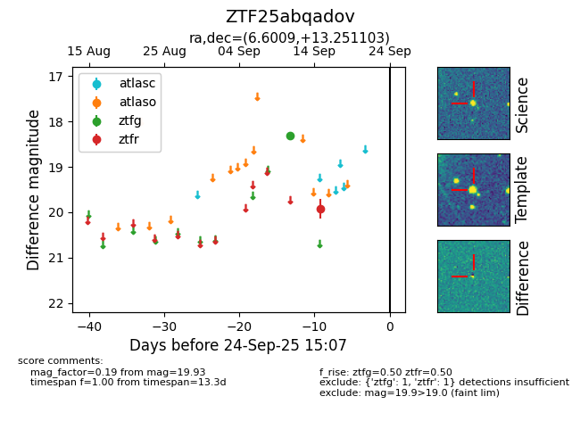

FINK: ZTF25abqadov
Lasair: ZTF25abqadov
ALeRCE: ZTF25abqadov
ZTF25abqadov (ztf,fink)
equatorial (ra, dec) = (6.6009,+13.25110)
galactic (l, b) = (113.5923,-49.16613)

last ztfg=18.32, ztfr=19.93
1 ztfg, 1 ztfr detections